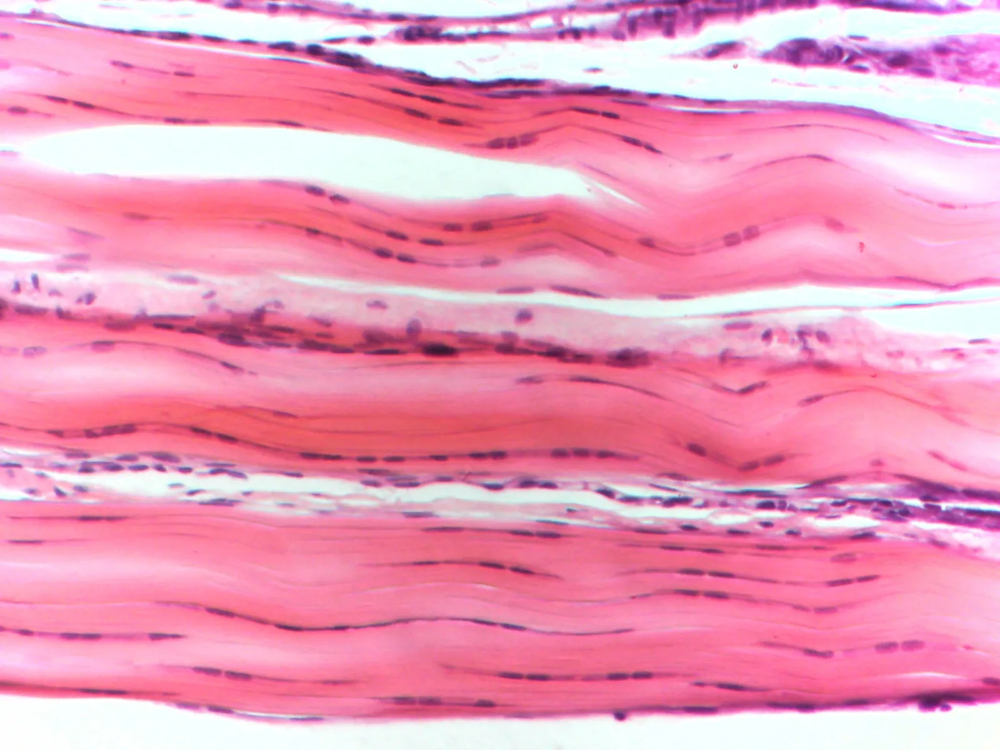
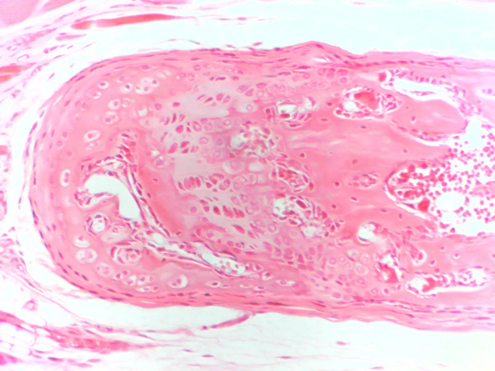

Lâmina 10 · Tecido conjuntivo
Tendão (tecido conjuntivo denso modelado)


Toque na imagem para ampliar. No computador, use as setas do teclado para trocar de imagem.
Lâmina 10 · Tecido conjuntivo


Toque na imagem para ampliar. No computador, use as setas do teclado para trocar de imagem.